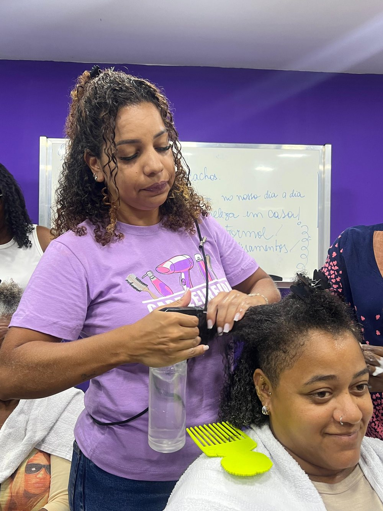

Apoio psicológico individual
Psicólogas acompanham as alunas durante a formação, para ajudar a atravessar o que a vida trouxe antes da sala de aula.

Como transformar um saber em oportunidade? Cada curso do Instituto nasce dessa pergunta.
Toda turma dura dois meses e junta formação técnica, roda de conversa, apoio psicológico individual e orientação prática para o mercado. Ao fim vem o certificado e o acompanhamento da Trilha Odara, que segue por mais dez meses.
Carregando os cursos
Ele está no que acontece em volta da aula.
Psicólogas acompanham as alunas durante a formação, para ajudar a atravessar o que a vida trouxe antes da sala de aula.
Leitura da situação familiar de cada aluna e orientação sobre como acessar serviços comunitários e políticas públicas a que ela tem direito.
Quanto custa, quanto cobrar e como organizar o dinheiro. Sem isso o certificado não vira renda.
A Trilha Odara segue com a aluna por doze meses, com encontros mensais, mentoria e encaminhamento para atendimento real.
As turmas são gratuitas e as vagas acabam rápido. Deixe seu nome com a gente e avisamos quando a próxima abrir.
Entrar na lista de espera